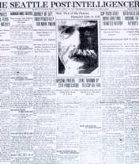
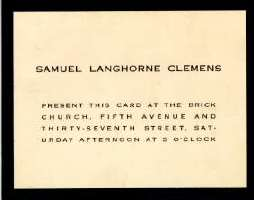
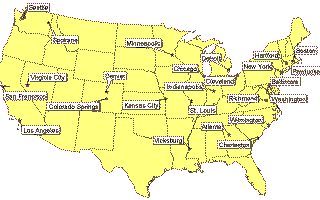
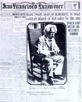
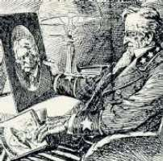
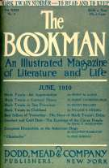
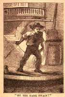

|
Huck Finn "don't take no stock in dead people," but the death of Samuel Clemens was treated in all parts of the country as a major event in America's history. It also provided an occasion for writers and readers, journalists and critics, to assess the significance and achievement of "Mark Twain" -- in his times and for all time. |
|  | By the time he died in 1910, Mark Twain was perhaps the best-known national celebrity. His final illness, death and funeral were treated as front page news across the country. Most papers relied on the Associated Press reports of these final events; by clicking on the paper at left, you can see how the AP covered the story. |
|  | Clemens' funeral was a small gathering in Elmira, where his wife and daughters were already buried. But to allow his public a chance to pay their respects, his body was first taken to New York City, where thousands saw it in the Presbyterian Brick Church. The viewing was open to the public, but if you had a ticket like the one at left you could be admitted first. By clicking on it here, you can see a series of photographs of this final "performance." |
|  |
Most newspapers also ran their own obituary editorials reflecting on MT's life and work. This archive contains 28 editorials. You can access them geographically by clicking on the map at left. Exploring the editorials this way helps see how, although writers talked about MT as an "American" figure, different regions tended to emphasize different aspects of his character and career, treating him as a midwesterner, a westerner, and so on. (It's curious that I haven't yet found a southern paper that showed any interest in discussing him as a southerner.) |
|  |
If you'd rather access the editorials through a more conventional table of contents, all 28 are also arranged by newspaper and date. Clicking on the paper at left will take you to that list. |
|  | Many newspapers commissioned their staff cartoonists to create drawings to give graphic significance to the occasion. Twelve cartoons from around the country are gathered into a portfolio you can open by clicking at left. These drawings provide another way to see how "Mark Twain's" legacy was summed up. |
|  | Between the end of April and the end of 1910, many American magazines published their own appraisals, recollections and tributes to MT. These pieces are longer, and intended to be more thoughtful and definitive, than the newspaper notices. Many were written by MT's friends and acquaintances. Twelve such essays, from eleven magazines, are available at present here. |
|  |
Thanks to the virtual properties of an electronic archive, you can also do a computer search of all the obituary notices to look for specific words, and so check for specific patterns and features in the way his times valued MT. It's interesting, for example, to see whether "Tom" or "Huck" is mentioned the most -- and what other characters and novels are singled out. Given MT's antipathy to Walter Scott, it's noteworthy how often he is used as a point of reference. You can search for words like "west" or "race," "humorist" or "novelist," "debt" or "wealth," or . . . |